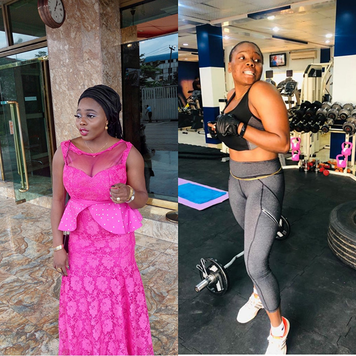

Transformation takes time and perseverance. Aziza certainly understands this; she weighed about 80kg three years ago. Aziza was body shamed by people which made her feel insecure in her own body, instead of letting does negative feelings and emotions takeover her beauty and self-worth, she made a choice to join the gym and started making healthier choices. Aziza started with little to no experience in fitness and soon learned her way up, with each milestone she felt better and got stronger. Her initial goal was to join the gym and lose the weight but after she lost the weight, she realized fitness is far beyond what is on the outside to quote her “ For me fitness is therapeutic, I learned the misconception regarding working out, so I decided to continue making healthier lifestyle choices”.
Goals: “To maintain my new weight whilst improving my athletic abilities”
Struggles:"fighting the temptations of old eating habits"
Fitness tip: “The fitness world is amazing, so if you’re looking to start working out: try and push your push yourself. Write down your goals and know your mission and always remember fitness is beyond losing the weight.”
Motivation: “It feels good when your body gets stronger. I can do a lot more now and sometimes it amazes me what my body can do, and I also get motivated by my workout partner she pushes me a lot.”